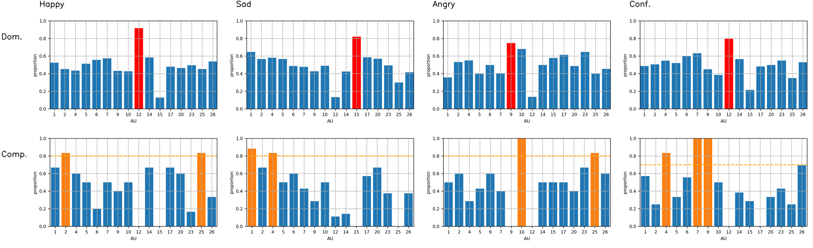
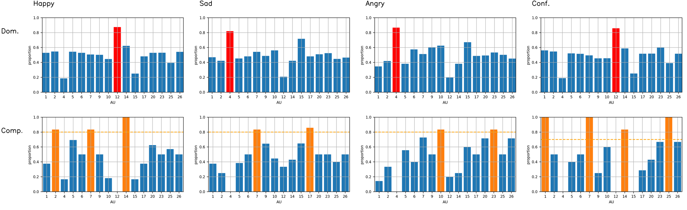
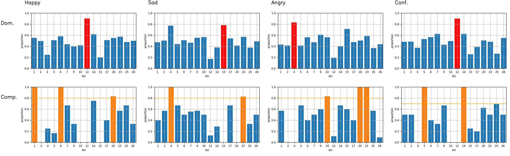

Facial expression manipulation by your own emotional prototype instead of the universal one
Sen Yan Catherine Soladié Jean-julien Aucouturier Renaud Séguier
CentraleSupélec, IETR UMR CNRS 6164, France
email:{first_name}.{last_name}@centralesupelec.fr
yansen0508@gmail.com
Paper | Code | Supplementary material| Acknowledgement
Supplementary materials of "Combining GAN with reverse correlation to construct personalized facial expressions"
Supplementary materials
According to the structural order of our manuscript, we present the supplementary figures and demonstrations for better understanding:
- 1) Mental representation computation from other observers
- 2) Converging curves for efficiency discussion.
Mental representation computation from #1, #3, and #4
|

#1 |
|

#3 |
|

#4 |
Converging curves for efficiency discussion.

happy-dominant |

happy-complementary |

sad-dominant |

sad-complementary |

angry-dominant |

angry-complementary |
Acknowledgement
This work was supported by Randstad France and ANR REFLETS.